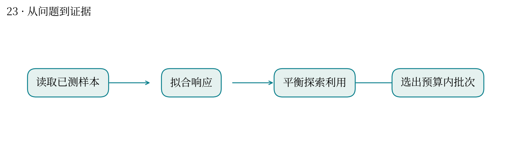
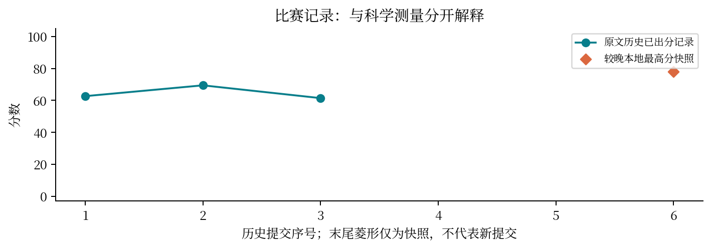

现实中想解决什么：实验预算有限，下一批退火/电导实验做哪几组最有价值？
从计算到应用：已有实验与不确定性 → 批量选点 → 用有限实验改善目标性能。
这次实际做到哪一步：本题比较采集策略与探索尺度，属于决定下一步实验的算法。
还缺什么：代理评估或比赛分数不等于真实性能提升；需实际实验反馈、预算对照和重复测量。
预算只够测一批样本，应该测最有希望的，还是最不确定的？
最高分快照：77.99 · 2026-10-12T01:11:24+08:00
本题同时考虑导电率和退火温度，并限制昂贵测量次数。选择新样本时，要在利用已有知识与探索未知之间取舍。
比较多种批量选择方法及 UCB 尺度设置，审查实际响应与本地代理评估，保留已审计候选。
历史早期得分 62.67→69.43；较晚快照为 77.99。网页用明确标为示意的 UCB 滑块解释探索强度。
不同量纲未标准化时，不确定性项可能压倒均值；模拟响应世界不能替代真实隐藏响应。
可类比主动选择测序样本，或自适应测评中选择下一道题；但优化性能与估计学生能力的目标函数不同。
应分别审查测量预算、重复选点、目标归一化和隐藏集泛化。没有隐藏标签时不宣称局部方法已达到全局最优。


| attempt | 提交时间 | 分数 | 状态 |
|---|---|---|---|
| 51806 | 10-10 23:53:47 | 62.6692 | 已出分 |
| 52054 | 10-11 00:51:36 | 69.43 | 已出分 |
| 53549 | 10-11 10:35:47 | 61.4299 | 已出分 |
| 54525 | 10-11 15:42:12 | — | 排队中 |
| 55568 | 10-11 19:24:35 | — | 排队中 |
源文件 SHA256 见 证据清单；用 scripts/build.py 重建图表。